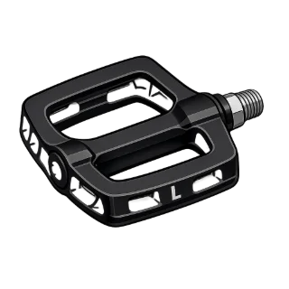
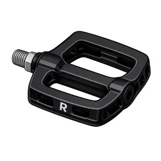

Connecting…

LEFT
RIGHTYour phone is the controller for Player 1.
Hold it sideways like handlebars. Tilt to steer, tap LEFT and RIGHT to pedal.
Scan the QR code on the game screen again.

LEFT
RIGHTTurn your phone sideways, like handlebars.